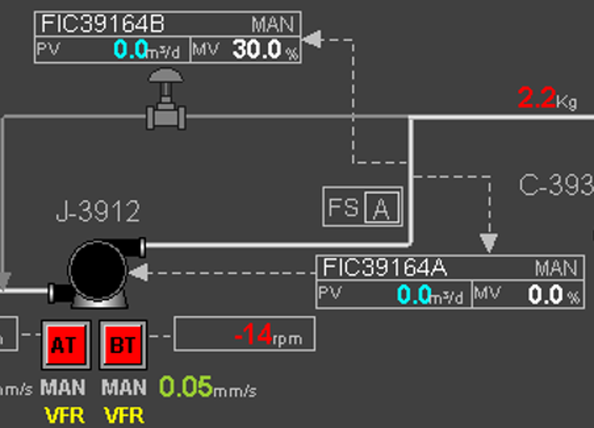

U-39 · Bombeamento e proteção hidráulica
Uma vazão medida. Dois setpoints. Duas ações sobre a bomba.
Entenda por que a mesma medição de vazão alimenta o FIC-39164A (rotação da J-3912) e o FIC-39164B (válvula de fluxo mínimo), e quando esses controladores se complementam ou entram em conflito.
Tela original · referência visual
O que pode ser afirmado na tela do SDCD

FIC-39164AMAN · PV 0,0 · MV 0,0%
FIC-39164BMAN · PV 0,0 · MV 30,0%
Indicação de rotação−14 rpm (tela capturada)
As duas PVs exibidas na captura estão em zero. A saída MV é comando, não prova de posição real. A leitura de −14 rpm, próxima de zero, não determina sozinha o estado da máquina. Com ambas as malhas em MAN, a correção PID automática não está ativa nessa captura. A unidade da PV na imagem aparenta ser m³/d; os exemplos e as simulações usam m³/h apenas como escala didática, sem assumir uma conversão ou um SP real da planta.
Mapa funcional
Elementos clicáveis
Clique em uma lâmpada no diagrama para abrir a explicação daquele elemento. Uma explicação substitui a anterior.
FTVazão medida
↓↓
↓ Bomba J-3912
↓ Válvula de mínimo
Operação hidráulica segura + vazão do processo
Atenção à interpretação: o desenho sugere essas funções e você confirmou o FT compartilhado e setpoints distintos. A posição efetiva do FT, os valores de SP, a ação dos PIDs, os seletores e os limites de velocidade dependem do documento de lógica.
Conceito central
Um sensor compartilhado não significa dois valores de vazão
FT → PV-A = PV-B, se escala, unidade e processamento forem iguais. A diferença está na referência: SP-A normalmente representa a meta operacional de vazão e SP-B um possível limiar protetivo. Se os controladores tentarem manter a mesma PV em dois SPs incompatíveis, será necessária uma filosofia de prioridade, habilitação ou limitação — não se pode satisfazer simultaneamente duas referências diferentes para a mesma variável.
Laboratório dinâmico · sinais e variáveis
Simulador interativo da J-3912
Altere as condições de processo, observe a correção das malhas e interprete as tendências. O modelo hidráulico é didático; não utiliza curvas, ganhos, temporizações ou intertravamentos reais da J-3912.
SIMULAÇÃO EM EXECUÇÃO
Animação do circuito
Resposta hidráulica em tempo real
↔ Deslize o desenho para visualizar o circuito completo.
Descarga / processo Retorno do mínimo SucçãoFluxo animado ∝ vazão
Diagnóstico automático
Leitura operacional da malha
FIC-39164AAUTO
PV —SP —MV —
—
FIC-39164BAUTO
PV —SP —MV —
—
Tendências de processo
Evolução temporal das variáveis
PV do FTSP-ASP-BVazão real da bomba
RotaçãoAbertura reciclo
Os gráficos mostram a dinâmica simplificada do simulador, não tendências históricas do Centum VP.
Registro de resposta da malha
Descrição funcional integral
Estratégia das malhas FIC-39164A e FIC-39164B
Do transmissor compartilhado à resposta dinâmica da rotação e da válvula de mínimo.
1. O que está confirmado — e o que ainda precisa de documento
Confirmado pela tela e pela descrição
A J-3912 possui indicação de rotação e dois controladores com tags FIC-39164A e FIC-39164B. Você confirmou que os dois recebem o sinal de um mesmo FT, com setpoints de vazão diferentes. No registro apresentado, as duas malhas estão em manual e exibem PV igual a 0,0 (a unidade parece m³/d, a confirmar no SDCD).
Hipóteses funcionais a validar
O A foi interpretado como comando de aceleração/desaceleração da J-3912 e o B como comando da válvula de fluxo mínimo. Precisam de confirmação: posição do FT, sentido de ação, SPs reais, escalas, permissivos de AUTO, seleção de prioridade, abertura real versus MV e destino da linha de recirculação.
FIC-39164A
2. Controlador de rotação
PV: vazão medida pelo FT. SP-A: referência operacional. MV-A: comando para elemento que altera velocidade da bomba (o caminho real até o atuador deve ser confirmado).
Se a PV estiver abaixo do SP-A, uma ação típica de vazão por velocidade solicita maior rotação; acima do SP-A, solicita menor rotação. Alterar N desloca a curva característica H×Q, modifica a altura fornecida e o ponto de encontro com a curva do sistema.
Há limites de aceleração, velocidade mínima e máxima, potência, pressão, NPSH e condições mecânicas. Portanto, o controle de rotação, isoladamente, não é garantia absoluta contra operação abaixo da vazão hidráulica mínima.
FIC-39164B
3. Controlador de recirculação
PV: a medição compartilhada do FT. SP-B: referência de atuação do caminho de fluxo mínimo. MV-B: sinal para posicionamento da válvula de recirculação.
Na hipótese de controle de mínimo por vazão total, quando PV cai abaixo do SP-B, a válvula tende a abrir: reduz a resistência do caminho alternativo e aumenta a vazão através da bomba, desde que exista diferencial de pressão e circuito de retorno disponível. Ao recuperar a margem de vazão, a válvula tende a fechar.
A finalidade primária não é simplesmente aliviar a pressão da descarga; é assegurar circulação hidráulica pela bomba. Abertura indiscriminada consome energia, pode comprometer a entrega ao processo e provocar aquecimento no retorno.
4. Por que dois setpoints diferentes?
O SP-A representa uma meta de operação; o SP-B pode estabelecer uma referência de proteção. Se PV = 120 m³/h, SP-A = 150 m³/h e SP-B = 80 m³/h, o A tende a acelerar e o B tende a manter o reciclo fechado. Se PV = 65 m³/h, os dois podem solicitar ações que aumentam a PV medida — acelerar a bomba e abrir o reciclo — se o FT mede a vazão total.
Limitação física: se SP-A = 60 e SP-B = 80 para uma mesma PV, dois PIDs independentes não conseguem manter PV simultaneamente em 60 e 80. Uma estratégia real pode utilizar seleção, acompanhamento de saída, anti-windup, lógica de habilitação, prioridades ou referências condicionadas. Nenhum desses elementos é comprovado somente pela captura do SDCD.
No simulador é possível alternar entre prioridade de mínimo (hipótese) e PIDs independentes para observar a diferença. Essa simulação não afirma qual delas existe na U-39.
5. Onde o FT está instalado?
FT antes do T de recirculação
Mede Qbomba. Abertura da válvula de mínimo tende a aumentar essa medição e fornece uma resposta física compatível com a proteção por vazão total. Ainda devem ser verificados atrasos, perdas, seleção de prioridades e se a medida realmente cobre toda vazão através do rotor.
FT depois do T de recirculação
Mede Qprocesso. Abrir a recirculação não assegura o aumento dessa leitura; ela pode diminuir pela divisão do fluxo. Usar a mesma PV para fechar diretamente uma malha de mínimo da bomba seria inadequado sem lógica complementar, medição adicional ou estimativa validada.
6. Resposta dinâmica, automação e modos
Em automático
O controlador compara SP−PV, corrige MV, aguarda a resposta da planta e reajusta sua saída. A dinâmica de velocidade do acionamento, o deslocamento da válvula, o escoamento e a filtragem do FT introduzem atrasos. Ganhos excessivos e dois controladores acoplados podem gerar oscilação.
Em manual
O operador estabelece MV e a ação integral do controlador deixa de corrigir autonomamente o erro. MV=30% não comprova abertura física igual a 30%; podem existir características não lineares, falhas ou posicionamento divergente.
Coordenação e integridade
São importantes as verificações de anti-windup, transferência sem salto MAN↔AUTO, saturações, ação direta/reversa e comportamento em perda de FT. Também é necessário avaliar a posição de falha da válvula e os intertravamentos aplicáveis segundo os documentos da unidade.
Escalas e sinais
Quando o FT é comum, a PV deveria coincidir nas mesmas condições de escala e filtragem. A diferença de SPs não altera a PV medida. Na captura, −14 rpm é uma leitura de velocidade praticamente nula, sem diagnóstico conclusivo de direção ou estado da máquina.
7. Quadro de interpretação operacional
| Situação | Resposta possível do FIC-A | Resposta possível do FIC-B | Risco / avaliação |
|---|---|---|---|
| PV acima de ambos os SPs | Reduzir rotação, se necessário | Reciclo tendendo ao fechamento | Checar demanda e limites de velocidade |
| SP-B < PV < SP-A | Aumentar rotação | Reciclo normalmente fechado | Correção operacional sem atuação de mínimo |
| PV abaixo do SP-B | Acelerar conforme SP e limites | Solicitar abertura do reciclo | Confirmar vazão real pelo rotor e posição do FT |
| SP-A inferior ao SP-B | Busca vazão abaixo do mínimo | Busca vazão mínima | Possível conflito se não houver prioridade |
| Válvula travada fechada | Pode chegar a limite | MV cresce sem abertura efetiva | Baixa vazão persistente; risco hidráulico |
| FT congelado | Resposta baseada em PV obsoleta | Proteção pode não reagir | Não confiar na PV única; conferir redundâncias |
| Sucção degradada | Acelerar pode piorar condições | Reciclo não corrige NPSH inadequado | Avaliação específica da sucção e da máquina |
Base técnico-científica
Operações Unitárias e Mecânica dos Fluidos
Fundamentos que explicam a existência do controle de rotação e da recirculação de fluxo mínimo.
1. Operação unitária: transporte de líquidos
Bombeamento é a operação unitária de transferência de energia mecânica para um líquido, de forma que possa vencer diferenças de pressão, elevação e perdas por atrito. A bomba aumenta a energia específica do fluido e permite sua movimentação pelo circuito.
Ph = ρ · g · Q · H
Peixo ≈ (ρ · g · Q · H) / η
ρ é massa específica; g é aceleração da gravidade; Q é vazão volumétrica; H é altura manométrica; η é rendimento global. Mesmo em baixa vazão, o eixo pode continuar fornecendo potência; parte das perdas acaba como calor no fluido e nos componentes.
2. Continuidade e conservação de massa
Para líquido aproximadamente incompressível em regime estacionário, a vazão que passa pela bomba corresponde à soma das vazões da descarga destinadas ao processo e ao retorno, sem outros ramos ou vazamentos relevantes.
Qbomba = Qprocesso + Qreciclo
Q = A · v
Diminuir a vazão implica menor velocidade média em uma tubulação de área fixa. A recirculação externa é uma forma de garantir vazão através do rotor independentemente da demanda instantânea do consumidor.
3. Energia e perdas de carga
Entre dois pontos do sistema de líquido, a relação de Bernoulli estendida considera pressão, elevação, velocidade, altura acrescentada pela bomba e dissipação por atrito. A perda de carga geralmente cresce aproximadamente com o quadrado da vazão no regime turbulento.
Hsist ≈ Hestática + K · Q²
Uma válvula abre ou fecha, alterando a resistência de um ramo. Ao abrir o reciclo, o escoamento encontra um caminho paralelo, alterando o ponto de operação da bomba.
4. Curva da bomba e ponto de operação
A interseção entre a curva H×Q da bomba e a curva do sistema define um ponto de operação. Rotação maior desloca a curva de bombeamento, geralmente elevando altura disponível e capacidade de vazão. Mudanças de contrapressão ou obstrução deslocam a curva do sistema.
O BEP é o ponto de maior eficiência. O fabricante estabelece regiões preferenciais e admissíveis de operação. O limite mínimo seguro não pode ser deduzido apenas do gráfico desta página.
Gráfico conceitual: curvas didáticas, sem correspondência dimensional com a J-3912.
5. Leis de afinidade e velocidade
Para o mesmo impulsor e pontos semelhantes de operação, aproximadamente:
Q₂ / Q₁ ≈ N₂ / N₁
H₂ / H₁ ≈ (N₂ / N₁)²
P₂ / P₁ ≈ (N₂ / N₁)³
Essas relações não afirmam que a vazão de uma instalação fixa crescerá exatamente na mesma proporção da rotação: a curva do circuito também determina a vazão efetiva.
Q relativa—
H relativa—
P relativa—
6. Por que baixa vazão danifica uma bomba?
Recirculação interna: em determinadas regiões de baixa vazão há separação de escoamento, vórtices e até reversões locais de fluxo no impulsor. Esforços hidráulicos: o carregamento radial e axial pode se tornar desfavorável, aumentando vibração e fadiga. Aquecimento: a dissipação de energia em pouco fluido pode elevar a temperatura local. Selos e mancais: sofrem efeitos indiretos de calor, vibração e deslocamentos do eixo.
Cavitação: ocorre quando pressões locais caem abaixo da pressão de vapor; em baixa vazão pode estar associada à recirculação interna, mas não é idêntica a ela. NPSH insuficiente é outra causa importante e não é resolvida necessariamente pela abertura da válvula de mínimo.
7. Limites mínimos: térmico e estável
Vazão mínima térmica: limite abaixo do qual o aquecimento do líquido torna a operação inadequada. Vazão mínima contínua estável: limite relacionado à estabilidade hidráulica e mecânica. A vazão mínima admissível depende dos critérios do fabricante, da rotação, das condições de líquido e da finalidade operacional.
Uma bomba pode ultrapassar o limite de estabilidade antes do limite térmico ou vice-versa. Portanto, “não está quente” não equivale a “está segura”. O SP-B do simulador é ajustável para fins pedagógicos; não é a especificação da bomba.
8. Retorno de recirculação e dissipação térmica
Um reciclo pode retornar a vaso ou linha de sucção, conforme projeto. Se retornar imediatamente à sucção, o líquido pode sofrer aquecimento acumulado e outras consequências. A queda de pressão na válvula também gera dissipação, exigindo análise de vaporização, cavitação/erosão na válvula e capacidade do retorno.
Reciclar mais do que o necessário pode desperdiçar energia, elevar temperatura, retirar capacidade de envio ao processo e desgastar a válvula. Por isso, a atuação do fluxo mínimo deve ser coordenada com a operação normal.
9. Exemplo fechado de balanço de vazão
Suponha, apenas para demonstrar continuidade, uma vazão mínima admissível de 100 m³/h. O processo demanda 40 m³/h; a abertura do retorno permite 60 m³/h adicionais. Então:
100 = 40 + 60 [m³/h]
A corrente que percorre o rotor é 100 m³/h, embora a corrente entregue ao processo seja 40 m³/h. Esse cálculo é válido apenas se o FT e a disposição das linhas forem interpretados corretamente. Se a válvula estiver travada fechada e a demanda for 40 m³/h, a bomba pode operar abaixo do limite seguro.
Treinamento CIC · intervenções controladas
Cenários de resposta e diagnóstico
Carregue um distúrbio no simulador, observe PV, SP, MV, vazões e tendências e responda à pergunta operacional. As situações são didáticas e não equivalem a procedimentos autorizados de operação.
Avaliação técnica · raciocínio operacional
Quiz e decisões sobre a malha
Questões contextualizadas, alternativas próximas entre si e posições embaralhadas a cada reinício. O objetivo é interpretar a malha, não reconhecer o tamanho da alternativa correta.
Questão 1 de 14
Responda com base em hidráulica, controle e diagnóstico.
Instrumentação e engenharia
Checklist de validação da malha real
Use estes pontos para fechar as incertezas antes de utilizar o conceito como descrição específica do controle implantado na U-39.
Dados necessários para confirmação no SDCD e documentação
O checklist é local desta sessão; não envia informações nem modifica o SDCD.
Fontes técnicas de apoio
Hydraulic Institute / Pumps & Systems — recirculação interna e danos a baixa vazão ↗KSB — comportamento hidráulico fora do ponto de melhor rendimento ↗Chemical Processing — recirculação de mínimo e bombeamento com variação de velocidade ↗
As fontes sustentam os princípios gerais. Nenhuma delas fornece o P&ID, a curva ou a lógica configurada especificamente para a J-3912.
Escopo do simulador
O aplicativo usa balanço de vazão, uma curva simplificada de bomba, curvas de resistência e dois controladores PI com limites de atuação e dinâmica de primeira ordem. A lógica de prioridade é uma hipótese selecionável; a simulação independente mostra possíveis interações. Não foram inseridos setpoints operacionais reais, limites de projeto, comandos remotos, alarmes de campo ou permissivos não comprovados. O aplicativo não controla equipamentos.
Para validar a implantação real são necessários, no mínimo, P&ID atualizado, narrativa funcional/controle, configuração dos blocos do Centum VP, curva da bomba versus rotação, vazão mínima autorizada e documentação da válvula de recirculação.